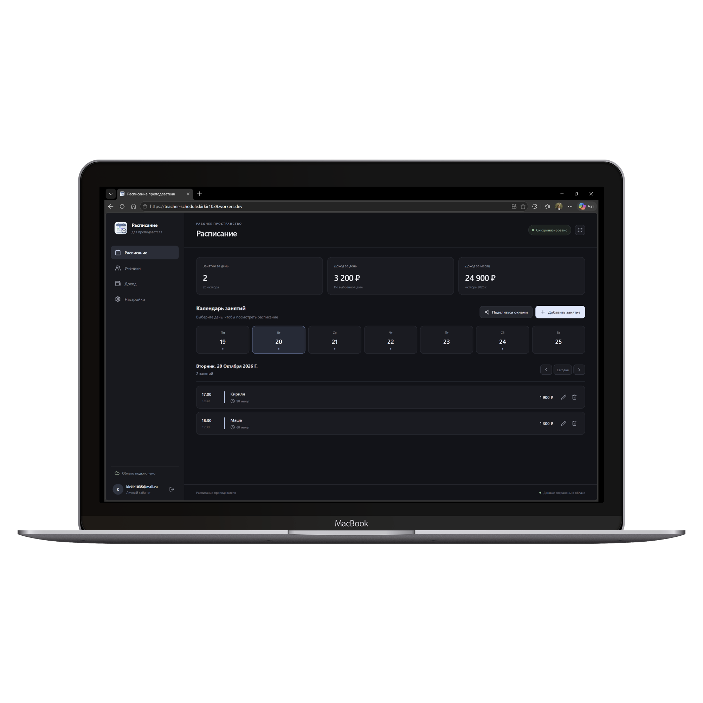
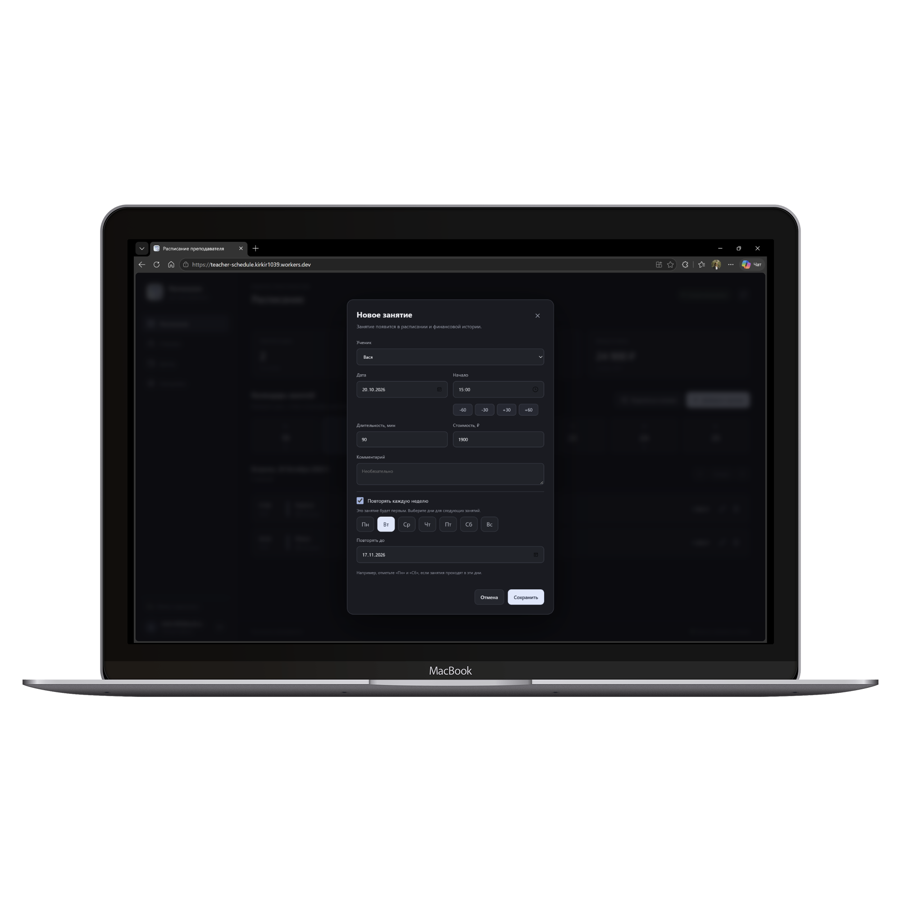
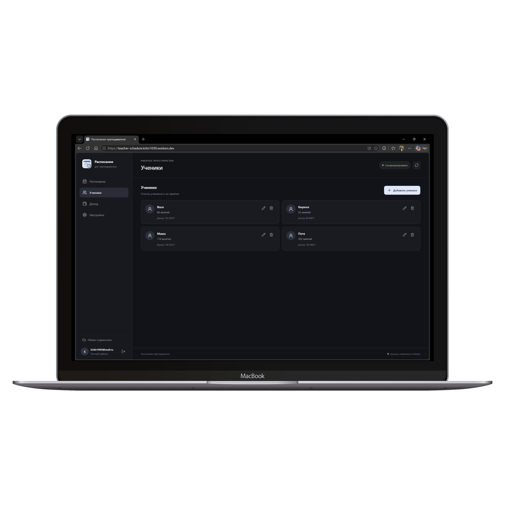
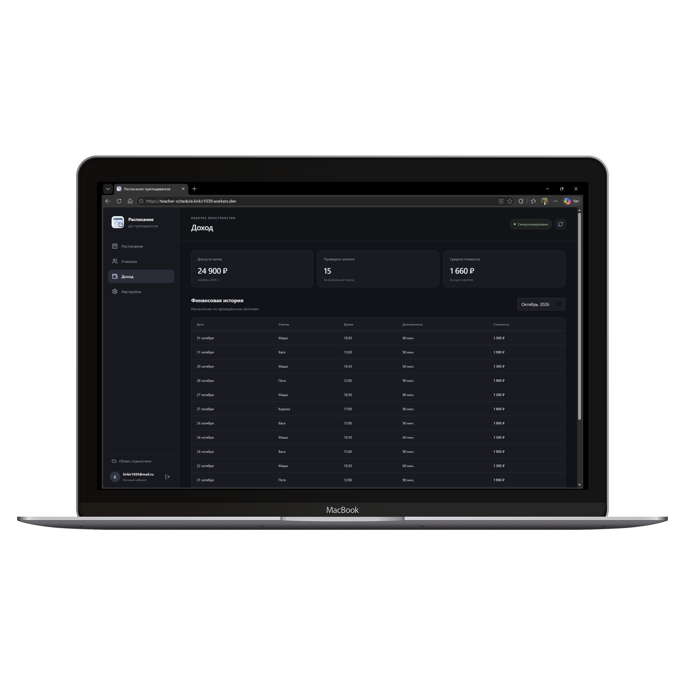
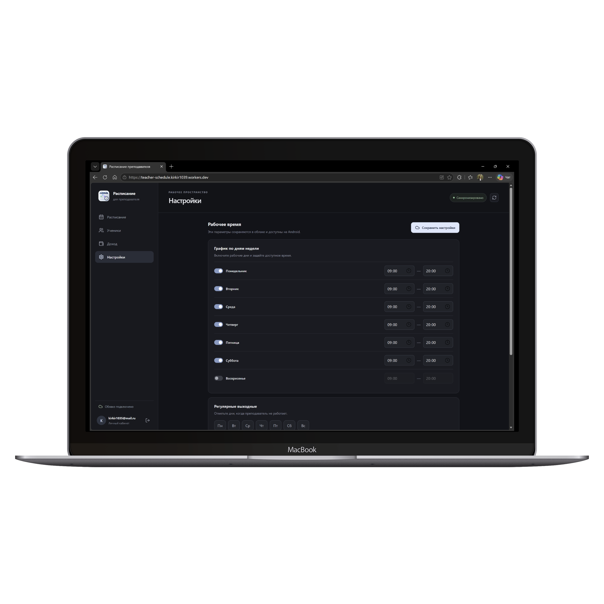
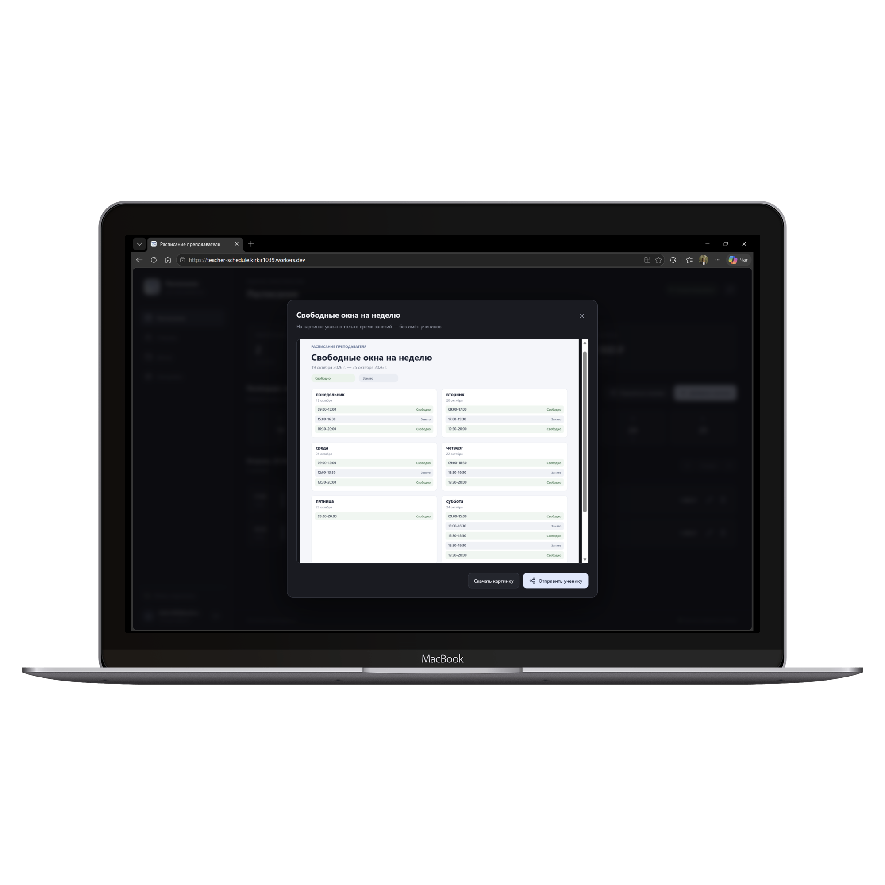
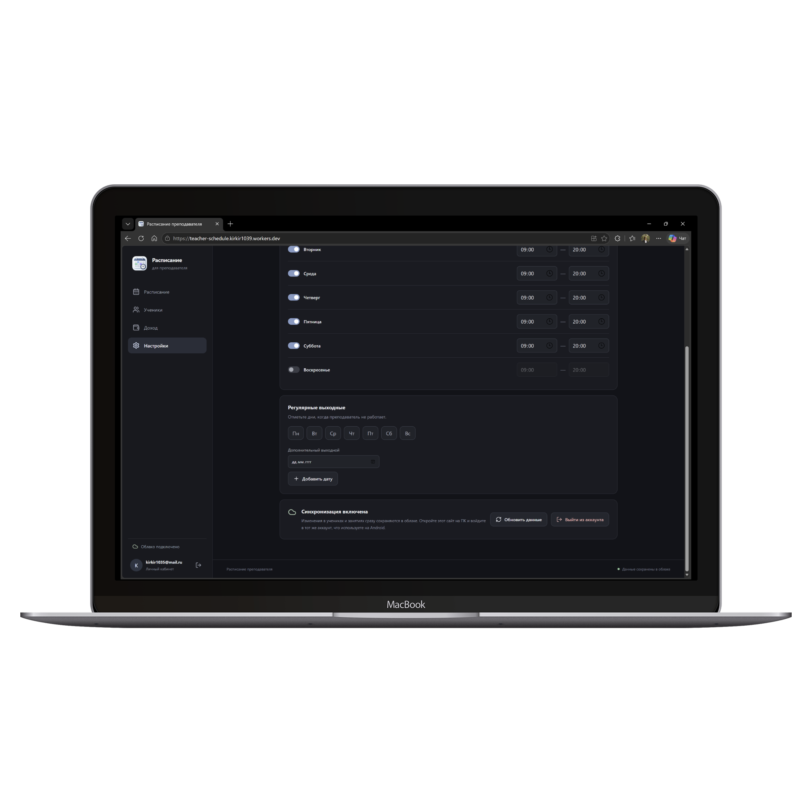

01 · РЕГИСТРАЦИЯ И ВХОД
Сначала — ваш аккаунт
Создайте аккаунт по электронной почте и паролю, подтвердите адрес по ссылке из письма и войдите. Этот аккаунт нужен для облачного хранения и связи с Android-версией, которую планируется добавить позже.
ПРОЕКТ · ВЕБ + ANDROID
Рабочее пространство репетитора: занятия, ученики, рабочие часы, свободные окна и доход — в одном месте.
ВЕБ-ВЕРСИЯ И ANDROID · ОБЛАЧНАЯ СИНХРОНИЗАЦИЯ


ЗАДАЧА
Когда уроки, ученики и расчёты разбросаны по разным местам, легко упустить важное. Приложение собирает повседневные дела репетитора в понятное расписание и автоматически сохраняет изменения в облаке.
ВОЗМОЖНОСТИ
01 · РЕГИСТРАЦИЯ И ВХОД
Создайте аккаунт по электронной почте и паролю, подтвердите адрес по ссылке из письма и войдите. Этот аккаунт нужен для облачного хранения и связи с Android-версией, которую планируется добавить позже.
02 · РАСПИСАНИЕ
Переключайтесь между датами, возвращайтесь к сегодняшнему дню и просматривайте неделю. Карточка занятия показывает время, продолжительность, ученика, стоимость и комментарий. Сводка сверху помогает быстро оценить количество уроков и доход за день и месяц.
03 · ЗАНЯТИЯ
При создании урока укажите дату, ученика, время начала, длительность и стоимость. При желании добавьте заметку. Регулярные занятия можно повторять по выбранным дням недели до заданной даты.
Повторение создаёт отдельные занятия: изменение одного урока не меняет остальные в серии.

04 · УЧЕНИКИ
Добавляйте, редактируйте и удаляйте учеников в одном разделе. В карточке каждого видно число занятий и накопленный доход; данные обновляются вместе с расписанием.

05 · ДОХОД
Выберите месяц и посмотрите общий доход, количество проведённых занятий и среднюю стоимость урока. Ниже — история начислений с датой, длительностью и стоимостью каждого занятия.

06 · РАБОЧИЕ ЧАСЫ
Для каждого дня недели задаются доступность и временной диапазон. Можно отметить постоянные выходные, а также добавить отдельные даты отпуска или отмены занятий.

07 · СВОБОДНЫЕ ОКНА
Сформируйте обзор свободных окон на неделю. Приложение показывает занятость по времени, не раскрывая имена учеников; результат можно скачать или передать через системное меню браузера, если оно поддерживается.
В окнах отображается только занятость — без имён и деталей уроков.

08 · СИНХРОНИЗАЦИЯ
Изменения сохраняются в облаке. Когда переходите между устройствами, обновите расписание, чтобы получить последние данные. Для работы нужен интернет; устанавливать веб-приложение не требуется.

КАК УСТРОЕНА ВЕБ-ВЕРСИЯ
КЛИЕНТ
Страница написана на TypeScript с React. Vite собирает интерфейс для браузера; стили оформлены на CSS.
БАЗА ДАННЫХ
SQL-схема создаёт таблицы учеников, занятий и настроек. Supabase Auth отвечает за аккаунты, а правила RLS ограничивают строки данными текущего пользователя.
РАЗМЕЩЕНИЕ
Веб-клиент доступен по адресу workers.dev. Cloudflare размещает приложение, а сама SQL-база находится отдельно — в облачном проекте Supabase; данные между клиентами можно обновлять через Realtime.
ПОПРОБУЙТЕ САМИ
Веб-версия уже доступна. Для личного расписания войдите в свою учётную запись.
Перейти в приложение ↗